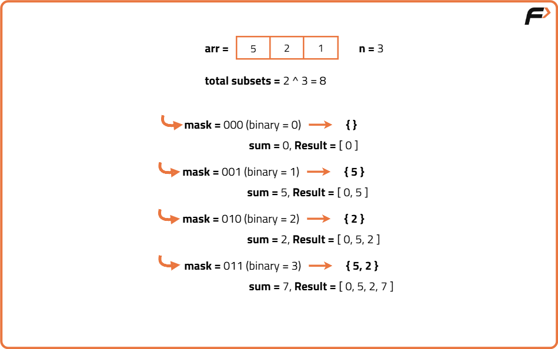
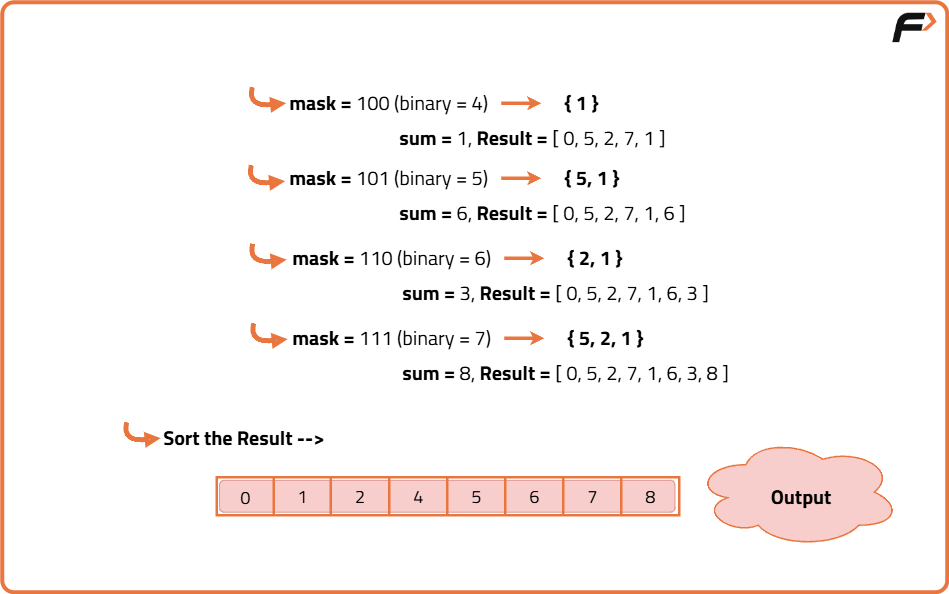

Subset Sum : Sum of all Subsets
Problem Statement: Given an array print all the sum of the subset generated from it, in the increasing order.
Examples
Input: N = 3, arr[] = {5,2,1} Output: 0,1,2,3,5,6,7,8 Explanation: We have to find all the subset’s sum and print them.in this case the generated subsets are [ [], [1], [2], [2,1], [5], [5,1], [5,2]. [5,2,1],so the sums we get will be 0,1,2,3,5,6,7,8
Input: N=3,arr[]= {3,1,2} Output: 0,1,2,3,3,4,5,6 Explanation: We have to find all the subset’s sum and print them.in this case the generated subsets are [ [], [1], [2], [2,1], [3], [3,1], [3,2]. [3,2,1],so the sums we get will be 0,1,2,3,3,4,5,6
Disclaimer: Don’t jump directly to the solution, try it out yourself first.
Bitmasking Approach
Algorithm
- Initialize an empty list to store subset sums
- Iterate mask from 0 to (2^N - 1)
- For each mask, initialize sum = 0
- Check each bit of the mask from 0 to N-1
- If a bit is set, add the corresponding array element to sum
- Store the sum in the list
- After processing all masks, sort the list
- Output the sorted list of sums


Code
#include <bits/stdc++.h>
using namespace std;
class Solution {
public:
// Function to find all subset sums using bitmasking
vector<int> subsetSums(vector<int>& arr) {
int n = arr.size();
vector<int> sums;
// Iterate through all possible bitmasks from 0 to 2^n - 1
for (int mask = 0; mask < (1 << n); mask++) {
int sum = 0; // store sum of current subset
for (int i = 0; i < n; i++) {
// If ith bit is set, include arr[i] in sum
if (mask & (1 << i)) {
sum += arr[i];
}
}
sums.push_back(sum);
}
// Sort sums to get increasing order
sort(sums.begin(), sums.end());
return sums;
}
};
// Driver code
int main() {
Solution sol;
vector<int> arr = {5, 2, 1};
vector<int> result = sol.subsetSums(arr);
// Print the subset sums
for (int sum : result) {
cout << sum << " ";
}
cout << endl;
return 0;
}
Complexity Analysis
Time Complexity: O(2n * n),We generate all possible subsets, which is 2n. For each subset, we iterate through the n elements to calculate its sum. Hence, total complexity is O(2n * n). Sorting the resulting sums takes O(2n log(2n)), which is smaller than O(2n * n) for large n, so the overall remains O(2n * n).
Space Complexity: O(2n),We store all subset sums in a result array, which requires O(2n) space. Apart from this, only a few variables are used, so extra space is constant O(1).
Recursive approach
Algorithm
- Initialize an empty list to store sums
- Create a recursive function taking index and current sum as parameters
- If index equals N, push the current sum into the list and return
- Recursively call the function including the current element (sum + arr[index])
- Recursively call the function excluding the current element (sum remains the same)
- Call the function starting from index 0 and sum 0
- Sort the result list and print it
Code
#include <bits/stdc++.h>
using namespace std;
class Solution {
public:
// Helper function to generate subset sums recursively
void findSums(int index, int currentSum, vector<int>& arr, vector<int>& sums) {
// Base case: if we have considered all elements
if (index == arr.size()) {
sums.push_back(currentSum);
return;
}
// Include current element
findSums(index + 1, currentSum + arr[index], arr, sums);
// Exclude current element
findSums(index + 1, currentSum, arr, sums);
}
// Main function
vector<int> subsetSums(vector<int>& arr) {
vector<int> sums;
findSums(0, 0, arr, sums);
sort(sums.begin(), sums.end()); // Sort in increasing order
return sums;
}
};
// Driver code
int main() {
Solution sol;
vector<int> arr = {5, 2, 1};
vector<int> result = sol.subsetSums(arr);
for (int sum : result) {
cout << sum << " ";
}
cout << endl;
return 0;
}
Complexity Analysis
Time Complexity: O(2n),Each element has two choices: include or exclude, leading to 2n subsets. We directly compute sums without iterating over subsets, so complexity is O(2n). Sorting the sums adds O(2n log(2n)), making the total O(2n log(2n)).
Space Complexity: O(2n),The result array holds all subset sums, requiring O(2n) space. Recursion uses an additional O(n) stack space due to function calls, so total auxiliary space is O(2n + n).